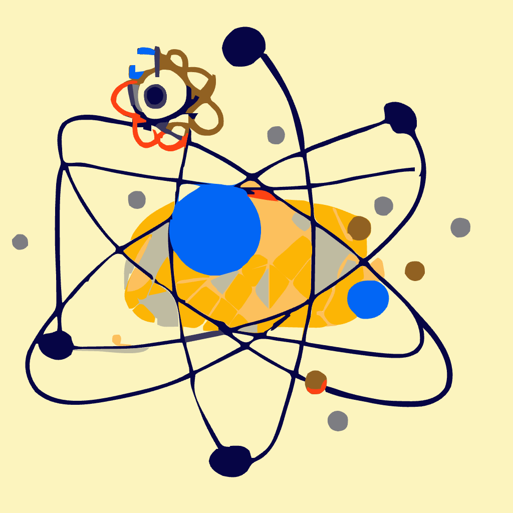
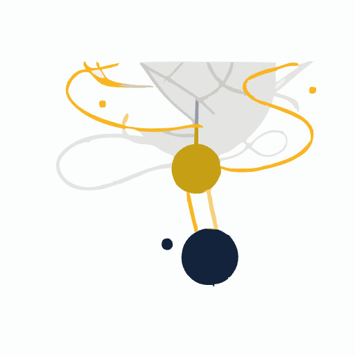
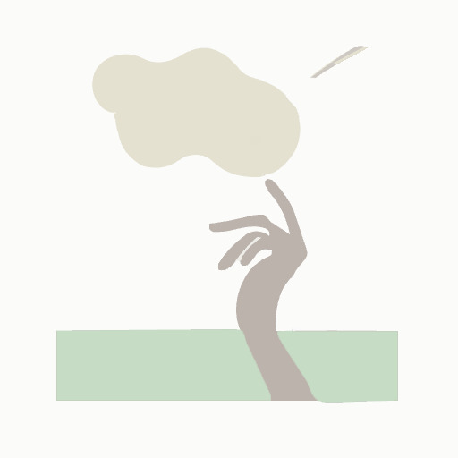

投稿日: 2023/07/23 09:37:40
カテゴリ: 思考整理
サムネイル:
過去に書いてきたいくつかの記事で、禅やマインドフルネスを通じた仏教的な概念を自分なりにいくつか考察してきたけれど、そのなかでも、自己肯定感に関することを記事にしておきたいと思う。
なお、この記事だけで正確に伝えきれるかわからないので、いつか、過去の記事や新しい追記も整理して、本のように構造化して再構成したいなとも考えている。
（挿絵の出典は脚注にて *1）
（だいぶ長い記事になってしまったので、短い概要文を先に書いておく。）
本記事では、"量子論的な重ね合わせ" を例えとして挙げて、禅などでイメージされる世界観を、ちょっぴり理系っぽい見方で (普段エンジニアとして働く立場の人間の視点から) 、あえて別の言葉で表現する方法を試みる。
その世界観を自己認識や他者の認識にも応用して、どのような見方をすることで自己肯定感にとらわれない考え方をすることができるのか、そしてその上で改めてどんな世界の捉え方をして、どういう生き方をしていくのが良いのかについて、禅などで提示されているアイデアを再整理し、肯定・否定を超えた見方を提示していく。
自尊心、自己肯定感というのは、誰しもが直面する問題ではないかと思う。目標を持って活動しているときに、理想とする「自分像」がイメージと食い違っていれば、「ああどうして自分はこんなにダメなのだろう」と思ってしまう。逆に、自分はこんなにもできるという崇高なイメージを自分に持っているときに、予想外の大失敗をしてしまったら、ショックを受けてしまい、自尊心は一時的にでも下がってしまうことだろう。
多くの書籍で自尊心や自己肯定感を高めたり、適切に保つ方法が紹介されているし、自分像、セルフイメージというのは、アサーションと同じくらい、自分自身に影響を与えるものであるといえる。
一方で、主に仏教には、"無我" という言葉がある。実は自分がイメージしている「自己」というのはそもそも存在せず、一種の幻想に過ぎない、とされているのである。
無我の境地に至ると真我が芽生えるとされていて、そこでは自分や他人の境もなく、「環境」という言葉のような、自己と別の空間を分けるようなことすらもないとされている。
それがどんな境地なのか、正直イメージすら難しいと思ったりもするのだけれど、アニメ『エヴァンゲリオン』の人類補完計画やATフィールドをイメージしてしまうのは自分だけだろうか (笑)。これは半分冗談といいたいところだけれど、あながちそうでもないかもしれない。
どちらにせよ、もし自尊心や自己肯定感の高い低いに振り回されることなく、安心感を得られるとしたら、これほど良いことはないと思えないだろうか。
今回の記事では、そうした自己肯定感の高低に固執することなく、不安を消す方法の一端を紹介していきたいと思う。
ちなみに筆者はお坊さんでも医者でも大学教授でもなんでもない。ただの会社員であり、普段はエンジニアとして働いている。仏教用語や科学用語などの専門用語はエッセンスとしてだけ扱い、禅やマインドフルネスなどの前提知識がなくてもわかるような、平易な説明ができるように最善を尽くしたい。
次章からの内容は、仏教において昔から永く伝承されていることを、自分なりに現代的な言葉で言い換えただけ、と思っている。しかし、自分が最初に禅やマインドフルネスに触れたときは、天動説と地動説の違いくらい、当時の自分にとって大きなパラダイムシフトだと感じた。したがって、読み手にとって論が飛躍してしまわないように、可能なかぎり丁寧に説明をしていく。（もし万一おかしな部分があったら、ぜひ指摘をお願いしたい。それは今後の改良の余地なのだと、楽しみを残しておくことにする。）
いくつかの記事で、禅における考え方の基礎となっているものは、量子ビットのようなものだという考え方を書いてきた。
量子ビットとは何かというと、「0でも1でもない、重ね合わせられた状態」をとるものであり、その状態は常に変化し、観察した瞬間瞬間で状態は常に変わっていて、確率論的なものでしか状態を表せない。
わかりやすくいえば、0か1かといった、はっきりと決定的で二者択一的なものではないということである。自然そのものがそうであるように、曖昧で、連続的で、確率的な情報を扱える概念ということである。
余談ではあるが、自分自身はエンジニアとして普段仕事をしている。今はまだ古典的ビットによる0/1のデータにより、非連続的で決定的な物事だけがコンピュータの計算の対象となっているのだけれど、将来はそうではない未来がやってくると思う。*3 *4
さて、この量子的重ね合わせの世界観を持っていると何が変わるのかというと、0/1で決定できるような、二元論的なものの見方を打ち破るきっかけになってくれる。
例えば、会社に嫌いな上司がいるというシチュエーションを思い浮かべてほしい。もう見るのも嫌なくらいな上司がいて、部下をこき使っていて嫌で嫌でしょうがないとする。
もしその上司が横断歩道を歩いている老人に優しく接していたり、子供には優しい様子を見かけたら、あなたはどう感じるだろうか。
「それはきっと偽善に違いない」「家や外ではそうだとしても、会社ではこうなのだ」と、割り切った考え方をしても良いだろう。（実際どうであるかは、きっと本人さえもわかっていないのだから ）
一方で、こう考えるのはどうだろう。上司はそもそも良い人でもあり悪い人でもあり、悪でもあり正義でもあると。そしてある瞬間の上司がどんな状態であるかは、実際に観察した瞬間に多様に変化していて、見方や見たタイミングによって状態が変わる、と。
これが量子ビット、量子論的「重ね合わせ」の持つ世界観なのである。

きっとあなたが見た上司の一面は、本当にある一面でしかなく、しかもそれもある条件下でたまたま観測されたものに過ぎないとしたらどうだろう。上司は常に変化していて、近づいて事細かに観察すると、実は複雑に重ね合わせられた集合体である、と。
そして、人間や物質、物事すべてにおいて、この常に変化する性質があるとしたら、どうだろう。一つだと思っていたものは近づくと実は集合体であって、常に変化していて、まるで雲のように捉えどころがないとしたら。
なおこれを仏教では "空" と表現している。般若心経の一節、「色即是空 空即是色」である。
この世界観では、もはやもう自分や他人の区別は曖昧で、境界すらも実はどこかがわからない。自分が言葉で「上司」だ、「自分」だ、と思っていたものは、単なる決めつけでしかない。思考するための仮初めの区別（ラベリング）でしかなかった、ということになる。
―― この捉え方が、禅やマインドフルネスにおける無我を理解するきっかけになるのではないかと自分は思っている。過去の偉人たちがどんな世界をイメージしていたかはわからないし、書き残された文書や資料から読み解くしかないのだけれど、現代科学的な見方で言い直すと、きっとこんな感じなのではないだろうか。
冒頭でちらっと挙げた「一切皆苦」についての記事でも少し書いているように、この世界観の捉え方では、A = B といった単純な見方をすることはもはや難しい。一方で、ありのままをありのままに捉えることや、言語や思考を超えた考え方をすることが重要になるということも、スッと受け入れられるように思う。*5
少し話が脱線してしまったが、この「重ね合わせ」の世界観をもって、自己肯定感というものを捉え直してみよう。
重ね合わせの考え方をもってすれば、例えば「自分が〇〇である」とか、「今日は日差しが暑い」「上司が怖い」「歯医者は痛いから苦手」「自分は注射が苦手」といった、A = B という考え方はすべて、ただの一部のものの見方に過ぎない。もはや善悪や得意・苦手の感覚すら、ある一瞬の印象に過ぎないのである。
極端な言い方をすれば、暑いと同時に寒い、ということもありえる。地球は実際そうで、地球の表側が暑いときは裏側は寒く、光があれば同時に影ができる。
それと同様に、誰かにとって 良いと悪いは同時に存在するし、苦しいと楽しいは同時に存在する。
これは地球の例のように、すごく離れた裏側に存在するとかそういうことではなくて、文字通り "同時に" 存在する。例示が宇宙スケールの話でわかりにくかったかもしれないけれど、ビー玉を日光に晒しても同じことが起こる。ビー玉は暑いと同時に寒く、光があれば同時に影ができる。大きさや距離は大した問題ではない。
くどいかもしれないが、話を人間関係に今一度戻してみよう。もし、自分が仕事で失敗して落ち込んでいるとしよう。思っていた成果がでなかった、取引先から怒られた、上司から怒られた、だから今日はダメな日だった。
でもそれって本当だろうか。今日っていつからいつまでなのだろう。1時間とか1分とか、1秒とか、瞬間瞬間で、いろんなことが様変わりに複合的に起こっているのに、ダメな日だったなんて一言で言い表すことが果たしてできるのだろうか。
一日の長い時間でなかったとしても、例えば大事な花瓶を落っことして落ち込んでいる友達を例にとっても良い。この瞬間、彼はダメなのだろうか。花瓶を割ってしまったことは確かに悲しい。でもそれは同時に買い替えのチャンスともいえるし、花瓶はいつかは壊れる。
なんだか、当たり前のことを言っているようなのだけれど、実際、一つのものというのは複合的、多面的で、いろんな事象が重ね合わせられていて、いろんな見方ができて当たり前なのだ。
重ね合わせの世界において、A = B であるというのは仮初めの決めつけ (ラベリング) でしかない。そうであれば、自尊心や自己肯定感といったものは、ある瞬間を切り取った、しかもある一面の見方でしかない。もはや肯定・否定というのもここでは難しいし、自己や他人、自己と外的環境との区別や境も、曖昧なのである。
ここまで読んで、ちゃぶ台がえしのように大前提がひっくり返って、わけがわからなくなった、と感じられた人もいるだろうと思う。言葉の綾だ、と感じられてもしょうがない。
言葉を扱う、思考を扱うというのは、物事を整理していく上でとても重要な行為である。（いま筆者もこの文章を書いたり校正をしていて、言葉の重要性をひしひしと感じている）
ただ、それがもし量子論的「重ね合わせ」の世界観においては、言葉を使った表現や、既存の思考・概念というものが実は難しいのだとしたら、どうやって扱っていけばいいのか、そしてどうやって生きていけば良いのだろうか。
その答えは、禅や仏教が既に答えを出している。*6
なんだ結局宗教なのかと思った人もいるかもしれないが、実は自分はこの答えにはあまり興味がない。そして実はそれが自分が（禅や仏教ではなく）マインドフルネスが好きな理由でもある。
今この瞬間を精一杯に生きて自分なりの答えを出すことこそが面白い。先人がどんな考え方を持っていようとも、最終的には参考にしかならない。大事なことは、先入観とか固定観念をなくすということであり、そうやって現実を捉え直したときに、あなたが今この瞬間に何を感じ、何を考え、どんな答えを自分で導き出すか が重要なのである。それができるのは私ではない、他ならぬあなたなのだ。決して誰にも換えはきかない。
一方で、先人の知恵では一応どういう答えが出ているかを少し覗いてみると、禅や仏教では「とらわれないこと」を一つの答えとしている。「中道」とも表現されるが、世の中の性質や現実をきちんと捉え、傾向があることを知った上で、それでも何かにとらわれず生き、中道をいくことを理想としている。
また、仏教のなかでも特に禅は瞑想を重視している。現実を自分の目や耳、手や足でしっかりと見つめ、観察して捉えることで、その答えは自分で見つける。もちろん、人間が安易に陥りがちな罠や悪といったものはあるので、そのガイドは先人の知恵として語り継がれて伝承されている。*7
ありのままを、ありのままに受け取る。そしてそこから気づきを得る。 これが禅が出してくれている一つの答えであり、生き方のヒントであると、自分は思う。
複雑で混沌としているものを、シンプルに整理するということも大切なのだけれど、複雑で混沌のままにして、そのまま、ありのままに捉えるということも、時には必要ではないだろうか。

自己が〇〇であると断定するのではなく、無理に肯定したり否定するのではなく、ありのままを受け入れる、気付く。そしてその先どうするかは、その瞬間に精一杯に考えるもよし、瞑想をして、一度頭を空にして、自然と答えが導かれるもよし。
人間というのは決めつけ (ラベリング) が好きな生き物であり、二元論的な区別をするのが好きだ。言葉は便利であり、言葉のおかげで伝達や思考ができる。しかし時には、目の前にあるものを、あるがままに捉えることが必要である。それが新しい気づきを得るきっかけとなるし、生きていくヒントとなる。
複雑や混沌に面と向かって向き合ったり、肯定も否定もせずに、混沌を混沌のままにするというのは、難しいことであり、勇気が要る。そしてその混沌というのは、瞬間瞬間ではきちんとした定まった状態を持っているくせに、常に変化しているというのだからタチが悪い。
でも、だからこそこの世界は面白いのだと自分は思う。複雑に入り組んでいるようで、でも案外シンプルな法則性がある部分もあって、そういう一見して排反した状態が重ね合わされている世界だからこそ、探求のしがいがあって、大勢で精一杯に生きてもまだまだおつりがくるくらいの、そんな懐の深さを持っている。
自分のありのまま、世界のありのままを受け入れるというのは、だいぶ勇気が要る。今この瞬間を生きるというのも、実は想像以上に難しい。
ありのままで生きるから、何もしなくていいということもないし、同時に、何もしなくても良い。こうしたいという信念が大事だともいえるし、全てが因縁や運命で決まるので何もしなくていい。
重ね合わせというのはそういうものであるし、言語で捉えるのはとても難しい。また、大切な事実として、いくら瞑想をして現実を捉えても、雲や霧のように、捕まえたと思った瞬間に手からほどけていってしまうのである。（日々の瞑想や修行というのは、このためにあるのだと思っている。）

それでも少なくともいえることは、ありのままを捉えることは、苦しいと同時に楽しいことであり、不安であると同時に、不思議と心から安心していられる。瞑想をすれば自然に、あなたはどんなときも一人ではないというのが、心から理解できるのではないだろうか。
自己の境界や認識などは、自分で仮に決めた決めつけでしかないのだから。私もあなたも、どこまでも自由なのだ。
今回、自分が過去に書いた記事を振り返りつつ、自己肯定感という軸で再整理してみたのだけれど、草稿・エッセンスとしては機能していると思いつつ、必要な出典や枝葉、応用例が多数不足しているように感じる。冒頭にも書いたようにやはり改めて再整理して、一種の書籍のように、どこかできちんとした文書に清書していきたい。
*1:イラストはillustrokeによって、文章より生成し、筆者が手直ししたもの。
*2:https://stereorynch.hatenadiary.jp/entry/2018/01/22/070000より引用
*3:1点だけ注意をしておくと、自然界の量子の性質と、量子ビットというのは、別物であることに気をつけておきたい。例えば機械学習モデルにおけるニューラルネットワークが、脳のニューラルネットワークと同じではないのと同様に、あくまで考え方が似ているということに過ぎない。また、量子ビットが古典的ビットを凌駕するとかそういうものではないことにも注意。
*4:ちなみに量子ビットは現時点で伝えやすい一つの例えだと感じているに過ぎなくて、例えば超弦理論のように、量子論すら覆すものも今後はきっと出てくるだろうし、何かを覆すような新しい考え方というのは、どれも面白いなと思う。
*5:余談ではあるが、言語というのは便利であるし、思考も重要なことである。それでも、自分たちが先入観をもってAだBだと思っているものをたまに見つめ直す活動は、面白い発見を生み出すことがある。
*6:自分は他の宗教はあまり詳しくないのだけれど、ひょっとすると他の宗教も、表現は違えど、同様の答えを出しているかもしれない。
*7:一般に禅では不立文字とされ、書き記した文字のみで語り継がれるのではない。先人の知恵の伝承や、何かへの問いのきっかけ修行僧に与える役割は師が担うことになる。これもひょっとすると、言葉で伝えることの難しさに重きを置いたのかもしれない。